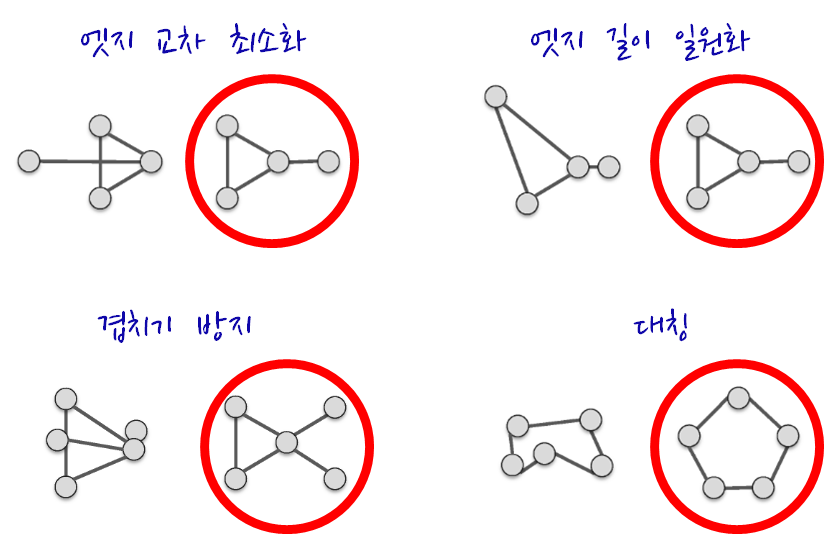
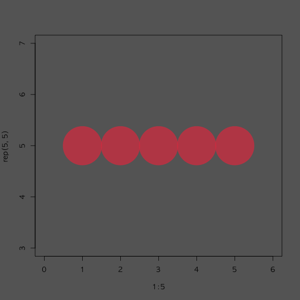
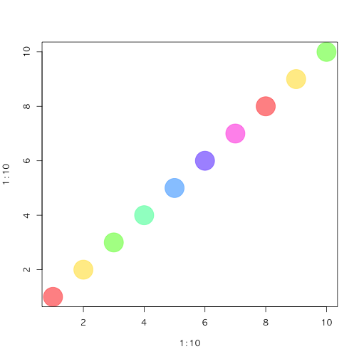
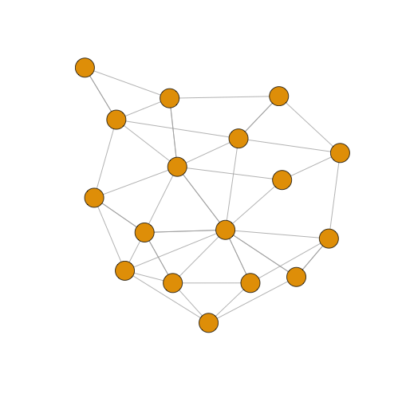
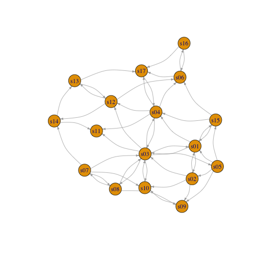
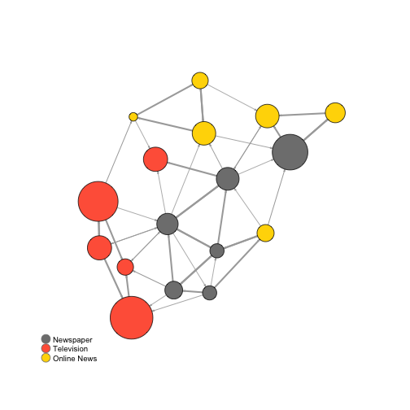
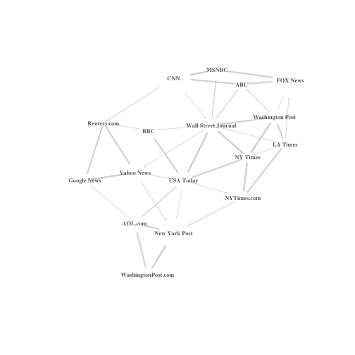
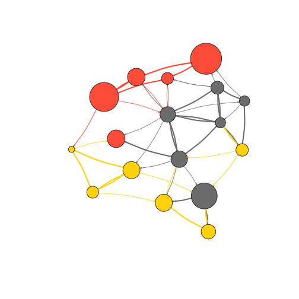

xwMOOC 기계학습
네트워크 데이터
1. 네트워크 시각화 1
네트워크 시각화는 다양한 목표를 갖고 있다.
- 주요 행위자를 식별하고 관계를 찾아냄
- 구조적 특성(Structural Properties)
- 관계 강도(Relationship Strength)
- 커뮤니티 식별
- 지도로 역할하는 네트워크
- 확산 패턴(Diffusion Patterns)

네트워크 시각화 목표를 구현한 일부 사례가 다음에 나타나 있다. 목표를 구현하는데 있어 결과를 제어하는데 사용되는 핵심 요소에는 다음이 포함된다.
- 색상
- 위치
- 크기
- 형태
색상, 위치, 크기, 형태 외에도 화살표를 통해 방향을 나타내고 라벨을 달아 표식을 한다.

최근에 개발된 그래프 배치는 속도와 심미적인 면을 고려하여 최적화 된다. 특히, 겹치는 것과 엣지 교차(Edge Crossing)을 최소화하고 그래프에 전반에 엣지 길이가 비슷하도록 조정한다.

2. 기본 색상
Base R에 포함된 시각화를 할 경우 시각화 요소를 제어하는데 사용되는 기본요소는 다음과 같다. 자세한 사항은 ? par 도움말을 참조한다.
x,y: 점 좌표pch: 점 기호모양cex: 점 크기col: 점 색상
plot(x=1:10, y=rep(5,10), pch=19, cex=3, col="dark red")
points(x=1:10, y=rep(6, 10), pch=19, cex=3, col="557799")
points(x=1:10, y=rep(4, 10), pch=19, cex=3, col=rgb(.25, .5, .3))Base R에 포함된 그래프 기능에는 RGB 값이 0 – 1 사이 값을 갖게 된다. 만약 0 – 255 값으로 변환하고자 할 경우 rgb(10, 100, 100, maxColorValue=255) 처럼 maxColorValue=255로 설정한다.
0 – 1 범위를 갖는 alpha 값을 조정하여 불투명도/투명도를 제어한다.
plot(x=1:5, y=rep(5,5), pch=19, cex=12, col=rgb(.25, .5, .3, alpha=.5), xlim=c(0,6))http://www.color-hex.com/ 웹사이트에서 16진수 색상체계를 사용해서도 R에서 색상을 표현할 수 있다. 앞에서 투명도 알파값을 사용하고, grDevices 팩키지에 포함된 adjustcolor 함수도 사용한다.
par(bg="gray40")
col.tr <- grDevices::adjustcolor("#e14150", alpha=0.7)
plot(x=1:5, y=rep(5,5), pch=19, cex=12, col=col.tr, xlim=c(0,6))
rainbow(), heat.colors(), terrain.colors(), topo.colors(), cm.colors() 팔레트가 grDevices 팩키지에 포함되어 있다. 예를 들어, heat.colors(5, alpha=1) 명령어는 heat 팔레트에서 불투명한 색상 5개를 갖는 팔레트를 생성한다는 의미가 된다.
# heat 팔레트에서 불투명한 색상 5개 생성
pal1 <- heat.colors(5, alpha=1)
plot(x=1:10, y=1:10, pch=19, cex=5, col=pal1)# 무지개 팔레트에서 투명한 색상 7개 생성
pal2 <- rainbow(7, alpha=.5)
plot(x=1:10, y=1:10, pch=19, cex=5, col=pal2)
colorRampPalette를 통해 계조도(Gradient) 색상을 설정하는 것도 가능하다. 즉, 회색에서 어두운 붉은색으로 계조를 두어 색상을 점차적으로 변화해 나가는 팔레트를 통해 색상을 만들어낸다.
# 계조도(gradient) 적용
palf <- colorRampPalette(c("gray80", "dark red"))
plot(x=10:1, y=1:10, pch=19, cex=5, col=palf(10))
# 투명도를 가미한 계조도 적용
palf <- colorRampPalette(c(rgb(1,1,1, .2),rgb(.8,0,0, .7)), alpha=TRUE)
plot(x=10:1, y=1:10, pch=19, cex=5, col=palf(10))
2.1. RColorBrewer 팔레트
적절한 색상 조합을 비전문가가 찾아내는 것은 쉬운 일이 아니다. 내장된 R 색상 팔레트는 다소 제한된 감이 없지 않다. 다행스럽게도 RColorBrewer 팔레트를 사용하는 것이 가능하다.
library(RColorBrewer)
display.brewer.all()
display.brewer.pal(8, "Set3")display.brewer.pal(8, "Spectral")display.brewer.pal(8, "Blues")brewer.pal 색상 팔레트를 활용하여 시각화가 가능하다.
rev() 함수를 조합해서 역순으로도 가능하다.
pal_set3 <- brewer.pal(10, "Set3")
plot(x=10:1, y=10:1, pch=19, cex=6, col=pal_set3)plot(x=10:1, y=10:1, pch=19, cex=6, col=rev(pal_set3))3. 글꼴 폰트 2 3
R에서 다양한 폰트를 사용하려면 사전 정지작업이 필요하다. extrafont 팩키지가 다양한 폰트를 사용하는데 도움이 된다. 특히, 윈도우 사용자가 많은 한국에서 다소 번거로운 과정이 필요한데, 맥이나 리눅스 사용자는 이를 건너 뛰어도 된다.
library(extrafont)Registering fonts with R
# 시간이 많이 소요
# font_import()
# 가져온 글꼴 폰트 확인
# fonts()
grep("Nanum", fonts(), value=T)[1] "NanumGothic_Coding"
# windowsFonts(NanumGothicCoding=windowsFont("NanumGothicCoding"))
# windowsFonts(NanumPenScript=windowsFont("`Nanum Pen Script`"))
# windowsFonts(NanumBrushScript=windowsFont("`Nanum Brush Script`"))
# windowsFonts(NanumMyeongjo=windowsFont("NanumMyeongjo"))
# PDF 플롯을 찍을 경우 device="pdf" 를 사용
# loadfonts(device = "win")원하는 글꼴 폰트를 활용하여 시각화한다.
#--------------------------------------------------------------------------------
# 한글 그래프
plot(x=10:1, y=10:1, pch=19, cex=3,
main="한글 그래프: 글꼴 폰트", col="orange",
family="MGungHeulim" )pdf 파일에 글꼴폰트를 내장하는 과정은 다음과 같다. 먼저, Ghostscript, GhostPCL, GhostXPS and MuPDF Downloads 다운로드 사이트에서 고스트스크립트를 다운로드하여 설치한다.
R에서 고스트스크립트 존재를 인식하도록 환경을 설정한다.
# 고스트스크립트를 R에 연결하는 환경설정
Sys.setenv(R_GSCMD = "C:/Program Files/gs/gs9.19/bin/gswin64c.exe")
# cairo_pdf()함수는 dev.off()가 발생되기 전까지 모든 출력결과를 pdf 파일로 전송
cairo_pdf("NanumMyeongjo.pdf", family = "NanumMyeongjo", width = 10, height = 5, antialias = "subpixel")
plot(x=10:1, y=10:1, pch=19, cex=3, main="한글 그래프 - 나눔 고딕 글꼴", col="orange")
dev.off()quartz_off_screen
2
embed_fonts("NanumMyeongjo.pdf", outfile="NanumMyeongjo_embed.pdf")Error in embedFonts(file = file, format = format, outfile = outfile, options = paste(paste("-I", : GhostScript was not found
4. 네트워크 데이터 구조
suppressMessages(library(readr))
suppressMessages(library(dplyr))
#-----------------------------------------------------------------------
# edgelist
nodes <- read_csv("https://raw.githubusercontent.com/kateto/R-Network-Visualization-Workshop/master/Data/Dataset1-Media-Example-NODES.csv", col_names = TRUE)Parsed with column specification:
cols(
id = col_character(),
media = col_character(),
media.type = col_integer(),
type.label = col_character(),
audience.size = col_integer()
)
links <- read_csv("https://raw.githubusercontent.com/kateto/R-Network-Visualization-Workshop/master/Data/Dataset1-Media-Example-EDGES.csv", col_names = TRUE)Parsed with column specification:
cols(
from = col_character(),
to = col_character(),
weight = col_integer(),
type = col_character()
)
#-----------------------------------------------------------------------
# 데이터 살펴보기
#-----------------------------------------------------------------------
head(nodes)# A tibble: 6 x 5
id media media.type type.label audience.size
<chr> <chr> <int> <chr> <int>
1 s01 NY Times 1 Newspaper 20
2 s02 Washington Post 1 Newspaper 25
3 s03 Wall Street Journal 1 Newspaper 30
4 s04 USA Today 1 Newspaper 32
5 s05 LA Times 1 Newspaper 20
6 s06 New York Post 1 Newspaper 50
head(links)# A tibble: 6 x 4
from to weight type
<chr> <chr> <int> <chr>
1 s01 s02 10 hyperlink
2 s01 s02 12 hyperlink
3 s01 s03 22 hyperlink
4 s01 s04 21 hyperlink
5 s04 s11 22 mention
6 s05 s15 21 mention
nrow(nodes); length(unique(nodes$id))[1] 17
[1] 17
nrow(links); nrow(unique(links[,c("from", "to")]))[1] 52
[1] 49
# 데이터 중복 처리 : 총합
links <- links %>% group_by(from, to, type) %>%
summarise(weight = sum(weight)) %>%
arrange(from, to)네트워크 데이터는 노드(Node) 와 엣지(Edge) 로 구성된다. 노드 데이터는 네트워크 노드에 대한 상세 정보가 담겨있다. 반면에 엣지 정보는 연결된 링크 정보를 담고 있는데 from, to 형식으로 데이터를 담을 수도 있고, 노드간의 관계를 관계 없음은 0, 관계 있음은 1로 표현한다.
head(nodes) 명령어를 통해서 살펴보면 head(nodes2)와 별다른 차이가 없다.
head(nodes)# A tibble: 6 x 5
id media media.type type.label audience.size
<chr> <chr> <int> <chr> <int>
1 s01 NY Times 1 Newspaper 20
2 s02 Washington Post 1 Newspaper 25
3 s03 Wall Street Journal 1 Newspaper 30
4 s04 USA Today 1 Newspaper 32
5 s05 LA Times 1 Newspaper 20
6 s06 New York Post 1 Newspaper 50
head(nodes2)Error in head(nodes2): 객체 'nodes2'를 찾을 수 없습니다
반면에 엣지 정보, 링크 정보는 하나는 from, to 형식으로, 다른 하나는 행렬로 표현된다는 점에서 차이가 있다.
head(links)Source: local data frame [6 x 4]
Groups: from, to [6]
from to type weight
<chr> <chr> <chr> <int>
1 s01 s02 hyperlink 22
2 s01 s03 hyperlink 22
3 s01 s04 hyperlink 21
4 s01 s15 mention 20
5 s02 s01 hyperlink 23
6 s02 s03 hyperlink 21
head(links2)Error in head(links2): 객체 'links2'를 찾을 수 없습니다
igraph 팩키지로 데이터를 시각화를 해본다. 가장 먼저 노드와 엣지 데이터프레임을 igraph 네트워크 객체로 변환해야 된다. graph.data.frame 함수가 노드와 엣지 데이터프레임 자료형을 igraph 네트워크 객체로 변환하는데 사용된다.
graph.data.frame 함수에 인자를 두개 넣는다.
- d : 네트워크 엣지(링크)를 넣어 넘긴다.
from,to형식으로 칼럼 두개가 먼저 정의되고,weight,type,label등 엣지를 표현하는 다른 정보가 나머지 칼럼에 담기게 된다. - vertices : 노드 id 로 첫번째 칼럼이 정의되고, 노드를 표현하는 다른 정보가 순차적으로 나머지 칼럼에 담기게 된다.
library(igraph)Loading required package: methods
Attaching package: 'igraph'
The following objects are masked from 'package:dplyr':
%>%, as_data_frame, groups, union
The following objects are masked from 'package:stats':
decompose, spectrum
The following object is masked from 'package:base':
union
net <- graph.data.frame(links, nodes, directed=T)
netIGRAPH DNW- 17 49 --
+ attr: name (v/c), media (v/c), media.type (v/n), type.label
| (v/c), audience.size (v/n), type (e/c), weight (e/n)
+ edges (vertex names):
[1] s01->s02 s01->s03 s01->s04 s01->s15 s02->s01 s02->s03 s02->s09
[8] s02->s10 s03->s01 s03->s04 s03->s05 s03->s08 s03->s10 s03->s11
[15] s03->s12 s04->s03 s04->s06 s04->s11 s04->s12 s04->s17 s05->s01
[22] s05->s02 s05->s09 s05->s15 s06->s06 s06->s16 s06->s17 s07->s03
[29] s07->s08 s07->s10 s07->s14 s08->s03 s08->s07 s08->s09 s09->s10
[36] s10->s03 s12->s06 s12->s13 s12->s14 s13->s12 s13->s17 s14->s11
[43] s14->s13 s15->s01 s15->s04 s15->s06 s16->s06 s16->s17 s17->s04
IGRAPH DNW- 17 49 --:- D 혹은 U : 방향성 있는 그래프 혹은 방향성 없는 그래프를 기술
- N : 노드가
name속성을 갖는 것을 기술 - W : 가중값이 있는 그래프로 엣지에
weight속성이 있음을 기술 - B : 이분(Bipartite, two-mode) 그래프로 노두가
type속성이 있음을 기술 - 17 49 : 노드가 17, 엣지가 49 개가 그래프에 존재함을 기술
attr: name (v/c), media (v/c), media.type (v/n), type.label (v/c), audience.size (v/n), type (e/c), weight (e/n):- (g/c) : graph-level character attribute
- (v/c) : vertex-level character attribute
- (e/n) : edge-level numeric attribute
- (e/c) : edge-level character attribute
E() 함수를 통해 네트워크 객체에 포함된 엣지 정보를 추출한다. V() 함수를 통해 네트워크 객체에 포함된 노드 정보를 추출한다. 직접 행렬 원소를 뽑아내는 것도 가능하다.
#------------------------------------------------------------------------
# 네트워크 객체 조회
E(net) # "net" 객체 엣지정보 조회 + 49/49 edges (vertex names):
[1] s01->s02 s01->s03 s01->s04 s01->s15 s02->s01 s02->s03 s02->s09
[8] s02->s10 s03->s01 s03->s04 s03->s05 s03->s08 s03->s10 s03->s11
[15] s03->s12 s04->s03 s04->s06 s04->s11 s04->s12 s04->s17 s05->s01
[22] s05->s02 s05->s09 s05->s15 s06->s06 s06->s16 s06->s17 s07->s03
[29] s07->s08 s07->s10 s07->s14 s08->s03 s08->s07 s08->s09 s09->s10
[36] s10->s03 s12->s06 s12->s13 s12->s14 s13->s12 s13->s17 s14->s11
[43] s14->s13 s15->s01 s15->s04 s15->s06 s16->s06 s16->s17 s17->s04
V(net) # "net" 객체 노드정보 조회+ 17/17 vertices, named:
[1] s01 s02 s03 s04 s05 s06 s07 s08 s09 s10 s11 s12 s13 s14 s15 s16 s17
E(net)$type # 엣지 속성 "type" [1] "hyperlink" "hyperlink" "hyperlink" "mention" "hyperlink"
[6] "hyperlink" "hyperlink" "hyperlink" "hyperlink" "hyperlink"
[11] "hyperlink" "hyperlink" "mention" "hyperlink" "hyperlink"
[16] "hyperlink" "mention" "mention" "hyperlink" "mention"
[21] "mention" "hyperlink" "hyperlink" "mention" "hyperlink"
[26] "hyperlink" "mention" "mention" "mention" "hyperlink"
[31] "mention" "hyperlink" "mention" "mention" "mention"
[36] "hyperlink" "mention" "hyperlink" "mention" "hyperlink"
[41] "mention" "mention" "mention" "hyperlink" "hyperlink"
[46] "hyperlink" "hyperlink" "mention" "hyperlink"
V(net)$media # 노드 속성 "media" [1] "NY Times" "Washington Post" "Wall Street Journal"
[4] "USA Today" "LA Times" "New York Post"
[7] "CNN" "MSNBC" "FOX News"
[10] "ABC" "BBC" "Yahoo News"
[13] "Google News" "Reuters.com" "NYTimes.com"
[16] "WashingtonPost.com" "AOL.com"
# 직접 네트워크 행렬을 조작
net[1,]s01 s02 s03 s04 s05 s06 s07 s08 s09 s10 s11 s12 s13 s14 s15 s16 s17
0 22 22 21 0 0 0 0 0 0 0 0 0 0 20 0 0
net[5,7][1] 0
5. 네트워크 데이터 시각화
plot(net) 명령어를 통해 시각화를 할 경우, 중복되는 엣지도 많고 해서 간략화할 필요가 있다. 이때 사용되는 명령어가 simplify() 함수다.
# plot(net)
net <- simplify(net, remove.multiple = FALSE, remove.loops = TRUE)
# net <- simplify(net, edge.attr.comb=list(Weight="sum","ignore"))
plot(net, edge.arrow.size=.01,vertex.label=NA)
dev.off()로 장치를 초기화하고, vertex.label.family 인자를 통해 글꼴도 설정한다.
dev.off()null device
1
par(mfrow=c(1,2))
plot(net, edge.arrow.size=.01,vertex.label=NA)
plot(net, edge.arrow.size=.01, vertex.label.family="NanumMyeongjo")5.1. igraph 주요 설정 매개변수
| 노드(Node) | 노드 매개변수 설명 |
|---|---|
| vertex.color | Node color |
| vertex.frame.color | Node border color |
| vertex.shape | One of “none”, “circle”, “square”, “csquare”, “rectangle”, “crectangle”, “vrectangle”, “pie”, “raster”, or “sphere” |
| vertex.size | Size of the node (default is 15) |
| vertex.size2 | The second size of the node (e.g. for a rectangle) |
| vertex.label | Character vector used to label the nodes |
| vertex.label.family | Font family of the label (e.g.“Times”, “Helvetica”) |
| vertex.label.font | Font: 1 plain, 2 bold, 3, italic, 4 bold italic, 5 symbol |
| vertex.label.cex | Font size (multiplication factor, device-dependent) |
| vertex.label.dist | Distance between the label and the vertex |
| vertex.label.degree | The position of the label in relation to the vertex, where 0 right, “pi” is left, “pi/2” is below, and “-pi/2” is above |
| 엣지(Edge) | 엣지 매개변수 설명 |
|---|---|
| edge.color | Edge color |
| edge.width | Edge width, defaults to 1 |
| edge.arrow.size | Arrow size, defaults to 1 |
| edge.arrow.width | Arrow width, defaults to 1 |
| edge.lty | Line type, could be 0 or “blank”, 1 or “solid”, 2 or “dashed”, 3 or “dotted”, 4 or “dotdash”, 5 or “longdash”, 6 or “twodash” |
| edge.label | Character vector used to label edges |
| edge.label.family | Font family of the label (e.g.“Times”, “Helvetica”) |
| edge.label.font | Font: 1 plain, 2 bold, 3, italic, 4 bold italic, 5 symbol |
| edge.label.cex | Font size for edge labels |
| edge.curved | Edge curvature, range 0-1 (FALSE sets it to 0, TRUE to 0.5) |
| arrow.mode | Vector specifying whether edges should have arrows, possible values: 0 no arrow, 1 back, 2 forward, 3 both |
| 기타 | 기타 매개변수 설명 |
|---|---|
| margin | Empty space margins around the plot, vector with length 4 |
| frame | if TRUE, the plot will be framed |
| main | If set, adds a title to the plot |
| sub | If set, adds a subtitle to the plot |
5.2. 노드와 엣지에 매개변수 반영
노드와 엣지를 네트워크 시각화에 매개변수를 통해 반영하는 방식은 두가지가 있다. 먼저 plot() 함수에 노드와 엣지 매개변수를 적어 넣는다.
edge.arrow.size=.4 엣지 화살표 크기를 .4로 설정하고, 엣지에 곡선을 .3으로 반영한다.
plot(net, edge.arrow.size=.4, edge.curved=.3)
엣지 색상은 오렌지색상으로, 노드는 회색으로, 노드 외곽 색상은 흰색으로 설정한다. 노드 라벨을 V(net)$media 변수를 사용하고 노드 라벨 색상은 검정색으로 설정한다.
plot(net, edge.arrow.size=.2, edge.color="orange",
vertex.color="dark gray", vertex.frame.color="#ffffff",
vertex.label=V(net)$media, vertex.label.color="black") 
두번째 방식은 igraph 객체에 속성으로 추가하는 것이다. 예를 들어, 미디어 유형에 따라 네트워크 노드에 색상을 추가하고, 연결 중앙성(Degree Centrality, 링크가 많으면 더 큰 노드)에 따라 크기를 조정한다. 가중치(weight)에 따라 엣지 선폭도 설정한다.
#------------------------------------------------------------------------
# 03.02. 첫번째 방식: igraph 객체에 속성으로 적용
# 미디어 유형에 따른 색상 생성:
colrs <- c("gray50", "tomato", "gold")
V(net)$color <- colrs[V(net)$media.type]
# 노드 연결 중앙성에 따른 노드 크기 설정:
deg <- igraph::degree(net, V(net), mode="all")
V(net)$size <- deg*3
# audience size 값을 사용해서 노드 크기 설정:
V(net)$size <- V(net)$audience.size*0.6
# 노드 ID로 현재 라벨이 설정되어 있는데, 라벨이 표시되지 않도록 설정:
V(net)$label <- NA
# 엣지 선폭을 가중치(weight)에 따라 설정:
E(net)$width <- E(net)$weight/2
# 화살표 크기와 엣지 색상을 변경:
E(net)$arrow.size <- .2
E(net)$edge.color <- "gray80"
E(net)$width <- 1+E(net)$weight/12
plot(net)
colrs <- c("gray50", "tomato", "gold")
legend(x=-1.5, y=-1.1, c("Newspaper","Television", "Online News"), pch=21,
col="#777777", pt.bg=colrs, pt.cex=2, cex=.8, bty="n", ncol=1)
노드 라벨을 적용하는 것이 의미론적인 면에서 더 의미가 있을 수 있다.
#------------------------------------------------------------------------
# 03.03. 노드 라벨를 활용한 네트워크 시각화
par(mfrow=c(1,1))
plot(net, vertex.shape="none", vertex.label=V(net)$media,
vertex.label.font=2, vertex.label.color="gray40", edge.arrow.size=.1,
vertex.label.cex=.7, edge.color="gray85", edge.width = 1+E(net)$weight/12)
엣지 색상을 노드와 맞춰 시각화를 함으로써 노드와 엣지를 함께 이해하는 것도 가능하다.
#------------------------------------------------------------------------
# 03.04. 엣지를 노드에 맞춰 색상을 맞춤
edge.start <- ends(net, es=E(net), names=F)[,1] # get the "from" node
edge.col <- V(net)$color[edge.start]
plot(net, edge.color=edge.col, edge.curved=.1)